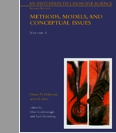

Syllabus
Course Description and Goals: This course is an introduction to models in cognitive science. The course begins by briefly considering non-cognitive scientific models, such as Newton's model of gravity. This will give us our first example of a parameter in a model (the gravitational constant) and hypothesized but hidden representations and processes (mass and gravity). We then turn our attention to empirical phenomena in cognitive science - such as perception, categorization, and decision making - and consider simple phenomena and models of each. This will provide our first taste of model construction and model fitting in cognitive science. Upon this foundation, we will then read several chapters that give in-depth descriptions of well established models in cognitive science. With these rigorous examples of models as standards, we will then evaluate a number of connectionist models of cognitive phenomena. The course will conclude by briefly considering the limit of behavior that is deemed to be cognitive; e.g., in insects, and the ways in which (models of) cognitive processing might differ from (models of) mechanical processing.
One goal of the course is to show how models in cognitive science are as essential as models in physical science, and to show that models play a similar role in both cognitive and physical sciences.
A second goal of the course is to selectively survey contemporary models in cognitive science. The survey emphasizes models that make a serious attempt to account for detailed aspects of human behavior.
Prerequisites:
Required Textbooks:
1. Scarborough and Sternberg (eds.), 1998. An Invitation to Cognitive Science - 2nd Edition: Vol. 4: Methods, Models, and Conceptual Issues. Cambridge, MA: MIT Press.
2. McLeod, Plunkett and Rolls, 1998. Introduction to Connectionist Modelling of Cognitive Processes. Oxford, UK: Oxford University Press.
Computers: We will be making extensive use of the campus computers.
http://www.indiana.edu/~jkkteach/Q550/ ^ upper case "Q"
Homework: There is homework assigned every week, as indicated on the course schedule.
Class Format: There will be a mix of lecture with discussion. For discussions to be useful, you will need to come well prepared.
Course Grading Method: Grades are based mostly on performance on the homework assignments, with additional benefits for thoughtful and frequent participation in class discussions. Grading is "on a curve" insofar as individual grades are assigned relative to the central tendency of all students in the course, but there is no preset shape of the grade distribution. As this is a graduate course, most grades will probably be A's or B's, with C's (or lower) assigned only rarely.
Lecture Notes: Neither lecture notes, nor copies of overhead projector slides, are available. If you must miss a lecture, get notes from a classmate, and then please see Prof. Kruschke or the assistant if you have questions.
Schedule: A detailed schedule is shown on a separate page.
How to Contact the Instructor or Assistant: This info is listed on a separate page.
Disclaimer: This syllabus is meant to be suggestive, not absolute. Any and all of the information on this syllabus is subject to change at any time, including exam or homework dates, grading policies, office hours, etc. Changes will be announced in class and on the announcement and discussion web page.